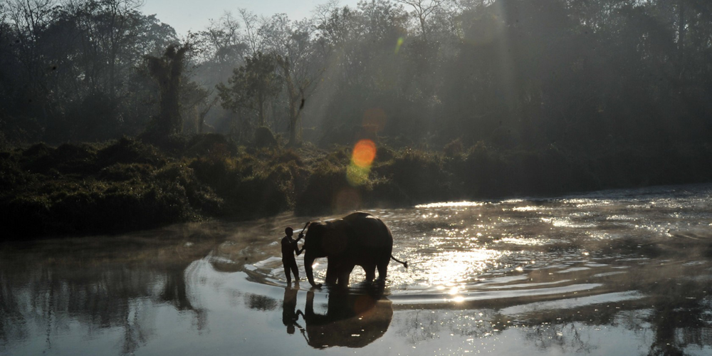
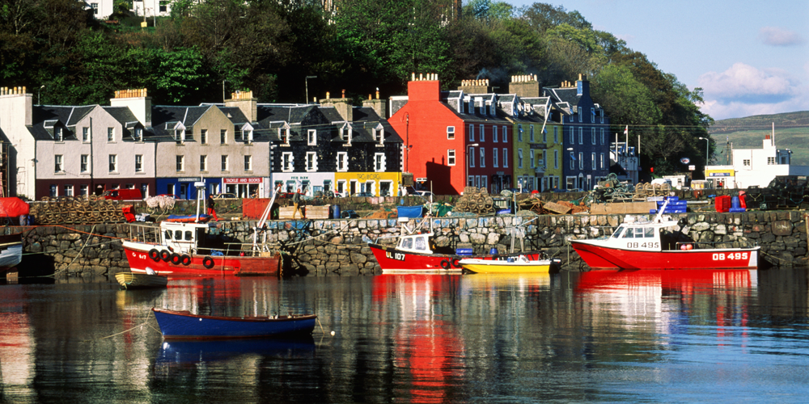

The Bucket List
30 unforgettable travel experiences chosen by Rough Guides writers and editors and other travel experts
Get lost in Fez el Bali

There are few places left in the world where you can get well and truly lost. But then there are few places in the world like Fez el Bali, an impenetrable maze of lanes and blind alleys that make up the beating heart of Morocco’s cultural capital.
Resist the urge to pull a map from your pocket and go with the human flow. Drop down into the bowels of the Medina, past camel heads advertising the local butchers and vendors bartering in the spice souk.
Let your senses steer you: to the sound of metalworkers hammering away at immense copper cauldrons on Place Seffarine; to the brightly coloured yarns drying in the heat on Souk Sabbaghine; or to the thick stench of the tanneries, a medieval scene of workers stood knee deep in a honeycomb of vats, soaking hides in pigeon dung and dyes of red, yellow, blue and green.
Resist the urge to pull a map from your pocket and go with the human flow. Drop down into the bowels of the Medina, past camel heads advertising the local butchers and vendors bartering in the spice souk.
Let your senses steer you: to the sound of metalworkers hammering away at immense copper cauldrons on Place Seffarine; to the brightly coloured yarns drying in the heat on Souk Sabbaghine; or to the thick stench of the tanneries, a medieval scene of workers stood knee deep in a honeycomb of vats, soaking hides in pigeon dung and dyes of red, yellow, blue and green.
click in the info boxes for more
Take the Trans-Mongolian Express
The Trans-Siberian Railway is the granddaddy of all train rides. And easily the most interesting train is the weekly Trans-Mongolian Express from Moscow to Beijing - this traverses Siberia and rounds Lake Baikal, strikes south across the Gobi desert past camels and nomads' yurts into the mountains of northern China, with glimpses of the Great Wall in the distance.
Conquer an Icelandic glacier
While Reykjavik, with its bright primary-coloured corrugated metal houses and welcoming residents, is an essential base - and the Blue Lagoon is a justifiably popular attraction - to really experience Iceland you need to find a glacier. A short minibus ride from the capital will take you far from the tourist trail of lava fields and waterfalls and into endless icy oblivion. Here, armed with crampons and pickaxes, you can explore the endless crevices and precarious ridges of the country’s vast but receding glaciers. The locals spend a week trekking over some of the larger masses and camping overnight on bare ice, but an afternoon is plenty.
1
2
3
4
Pitcairn Islands
Carcass Island
St Helena
Tristan de Cunha
Travel to the Tea Time Islands
I’d recommend a journey to what I called the Teatime Islands in my first travel book of the same name. They’re incredibly remote islands that still belong to the UK and encompass the Pitcairn Islands in the southern Pacific Ocean, Carcass Island which is part of the Falkland Islands, and St Helena in the South Atlantic Ocean. The one I’d really highlight would be Tristan de Cunha in the Atlantic Ocean. Spending two weeks on a ship from Cape Town is a fantastically romantic way to arrive.
Visit Herculaneum in the
shadow of Mount Vesuvius
shadow of Mount Vesuvius
It’s hard to miss Mount Vesuvius, the conical mound looming over the countryside east of Naples. Even though the last eruption occurred over sixty years ago, I still felt rather daring – and nervous – scaling the summit (a mildly strenuous 30min walk from ticket booths near the top) of this infamous killer. In AD 79 a deadly concoction of lava, ash and poisonous gas engulfed the two Roman towns of Herculaneum and Pompeii. I’d definitely recommend a visit to Herculaneum– the smaller and more manageable of the sites – after the climb, which brings both context and an unsettling dollop of poignancy.
Hike China’s Great Wall
I’ll never forget stumbling wobbly-legged out of a rickety cable car to see this ancient monolith snaking away across the hills. It's one of China’s few "must-see" sights that really lives up to expectations. To make sure you see the original fortifications, bypass the super-touristy reconstruction at Badaling and head on to more remote Jinshanling. Just don’t attempt the steep-sided scramble in flip-flops as I did; this stunning stretch is mostly un-restored and the hike is as challenging as it as is scenic in places.
Climb Cadair Idris, Wales
Standing 2930ft tall, Snowdon’s rugged, shorter sibling – Cadair Idris – makes up in looks for anything it lacks in height. Legend has it that if you spend a night at the top you will die, become a poet or go mad, but the views from here are stunning – a patchwork of greens interrupted by molten-metal slivers of river estuary and sea. Hardy visitors can have a dip in Cwm Cau too, which changes colour from lagoon blue to inky black as clouds race overheard.
Hunt for icebergs in Newfoundland
You won’t forget the first time you see an iceberg. I assumed it was a small island or a cruise ship, towering over lobster boats like a floating white cathedral. Once I got closer the air changed, got colder; I could actually sense the density of ice looming ahead. Up close it was a sort of bluish, translucent white, whittled by the wind and salt into strange, Dali-esque shapes and curves. Finally, when the boat cut its engine, hissing, popping and cracking sounds drifted eerily across the waves – the iceberg was alive, growling across the Atlantic.
Tickle whales in Mexico
If I had to pick just one place it would be San Ignacio Lagoon in Baja California, on the Pacific coast of Mexico. This a breeding ground for grey whales, which love to be scratched and tickled by visiting humans – it’s arguably the most extraordinary, awe-inspiring and emotional wildlife encounter on the planet.
Sail round the Galápagos
The Galápagos islands are among the most remote and magical destinations on earth, so the sight of vast modern cruise ships chugging between them can come as a shock. To visit the islands in style pick a smaller vessel, preferably one with sails as well as an engine. With the sound of canvas flapping in the wind and the creak of wooden decks beneath your feet, you can almost imagine how a certain young Mr Darwin felt when he arrived here in 1835.
Swim with manatees in Florida
One thing that still lingers in my memory is swimming with manatees in Crystal River in Florida. You go out at dawn and lower yourself into a misty river, then suddenly these manatees the size of a car nuzzle up next to you and take an interest – and in my case they gave me a hug and rolled around with me. It’s one of the best interactions I’ve had with the natural world, and while it’s a touristy thing it doesn’t feel that way when you’re doing it.

Go volcano-boarding in León
Nicaragua’s former capital and the birthplace of the Sandinista revolution, vibrant León offers lovely colonial architecture, fun museums and superlative fried chicken. You can also take an unusual tour to the steep ash of nearby Cerro Negro, where gas belches from cracks and views stretch over Nicaragua’s Pacific plains. The walk up is a slog, while the descent sees you surf down the dune-like surface as dust rises around you. You can sit or stand – you’ll almost certainly fall – and while it’s rare to get up much of a top speed, the experience is thrillingly surreal.
Take a slow boat up the Nam Ou
The Mekong may be more famous, but my favourite river journey in Laos is on the Nam Ou, which winds its way through the north’s dramatic mountains and limestone karsts. Sure, the boats are rickety and old, the seats are uncomfortable, and these days its hard to predict if they’ll actually be running, but the three day journey, from sublime Luang Prabang to the tiny, isolated settlement of Hat Sa, gives you that rare feeling of experiencing a part of the country that few foreigners see.

Watch elephant
bathing in Nepal
bathing in Nepal
Every morning a procession of dusty elephants is led to the Rapti River, on the edge of Chitwan National Park, for a good scrub down – and travellers are welcome to help out. The pachyderms delight in shooting jets of water from their trunks, wallowing on their sides while layers of mud are scraped off and, occasionally, dumping unsuspecting riders into the river. It’s a magical experience that the elephants seem to enjoy almost as much as the travellers.
Eat steak in Buenos Aires
Sampling a slice of bife de chorizo in Argentina is a must. The slice I was served at the La Cabrera restaurant in Buenos Aires’ Palermo barrio looked pretty standard. Then I went to cut it, and the steak seemed to part before my knife. I popped the first chunk into my mouth. I started laughing. I didn’t even want ketchup. It was meat and man in perfect harmony."
Drive from Viñales to Cayo Jutías by scooter
Viñales, a sleepy little town to the west of Havana, is in many ways typical of rural Cuba. What sets it apart, however, are the mogotes (boulder-like hillocks) that jut out of the landscape and provide a magnificent backdrop to an already picturesque part of the country. It’s lovely just lolling around in the sunshine taking in the strange and beautiful vistas, but to ramp the experience up a notch, hire a scooter and wind your way around the mogotes along the local road to the coast. Once at the beach at Cayo Jutías it's more of the same idyllic sands and impossibly blue Caribbean water. The real joy is of course the journey: empty open roads, wind in your hair and spectacular rock formations as far as the eye can see.
Spend a night in Wadi Rum
Wadi Rum is about as close you’re going to get to the landscape of Mars here on Earth. The soil is a deep and rusty red, the mountains austere, and the silence almost disconcerting. Canyons and rock formations are scattered across the desert and make for good scrambling. Join an overnight excursion - by jeep or camel - for the experience of sitting round a crackling fire underneath pearly stars, talking to the Bedouin about their life in this desolate space.
Feast on oysters in Bouzigues
Feasting on the freshest oysters, washed down with a glass or two of local Picpoul de Pinet, while gazing out on the lagoon where the tasty little bivalves grew up, comes pretty close to lunchtime perfection. Depending on how much you’ve eaten, or drunk, consider a post-prandial dip – the waters of the Étang de Thau are tested daily to ensure optimum mineral levels for shellfish cultivation, and the saltiness means you’ll happily bob along, no matter how big your lunch.
Steam in a temazcal, Mexico
The door slid shut, plunging the small domed room into darkness. The drumming started, softly, and the room filled with herb-scented steam. I went into the Maya sweat lodge - known in Mexico as a temazcal - just for the dewy skin. But after two hours of sweating in the dark, it was hard not feel some kind of oneness with the universe. I do know that the Caribbean Sea never felt so refreshing as afterwards, and my skin never looked so good.
Witness Tibet’s true spirit
The one place I wish everyone could visit is Tibet. It's sad in many places now, hideously over-developed and not at all the place you imagine. But it remains the one place I know that exerts a curious kind of spell and takes you to a different part of your being, for better or for worse. And in some ways its spirit has been strengthened and intensified even as - or sometimes because - its surfaces have been destroyed. Ladakh is more beautiful, Bhutan is better protected, Nepal is more funky. But Tibet is one place from which it's hard to come home unaltered, and in ways you can never predict.
Hike in Brazil’s Chapada Diamantina
The Chapada Diamantina (Diamond Highlands) are Brazil’s top trekking destination. Hikers find that, upon a hilltop, not only does the landscape change, but so does the ecosystem. These highlands lie in the interior of Bahia where three of Brazil’s biomes meet: the Atlantic rainforest, the cerrado – similar to the African savannah – and the caatinga (shrubland), which feels like the American chaparral. You can explore dry caves, swim in underground lakes, dive under waterfalls and climb near-vertical mesas all in the same day. The only constant in the scenery is unwavering change.
Sleep wild in central Sweden
Glassy lakes, pure air and an outside chance of bears: camping in the forests of central Sweden is both wild and free. There’s even a constitutional law protecting everyone’s right to enjoy the great outdoors. So go swimming, drink from a stream, or fill your belly with red berries. Then sip whisky around the campfire and crash out on a reindeer skin, gazing up at the starry sky.

Stay in a Japanese capsule hotel
Defy the horrified hearsayers and check yourself into the beehive. Stacked three-high in some places, the Japanese capsule hotels are designed for businessmen on the move and offer an experience you'll find nowhere else. Scrub up in the communal bathhouse, get accustomed to your control panel, try to make sense of Japanese television and settle down to the most efficient 40 winks you'll ever catch.


Sleep beneath the stars in the Sahara Desert
As the sun shifts, the Sahara Desert takes on different colours: silvery white at dawn; ochre in the heat of the day; deep gold at sunset. We stayed at a Berber camp and fell asleep on our backs, counting shooting stars that burned through the darkness like rogue coals from the campfire. At 6am we climbed a sand dune overlooking Algeria and watched the sun emerge from the horizon, a blazing ball of desert red that turned the sand rose gold. Desolate, but beautiful.
Swim with pink river dolphins
In the vast, swampy grasslands of Pampas del Yacuma, the pink freshwater dolphin is one of the more pleasant surprises hidden in the murky waters of the Bolivian Amazon. With the annual floods, bubblegum pink dolphins dreamily glide amidst tree trunks and chase fish between drowned, twisted branches. There’s nothing quite like the thrill of diving into these muddy, unknown depths to swim alongside these surreal creatures; it’s a far cry from the pristine pleasure of frolicking with dolphins in SeaWorld.

Take the kids to Tobermory, The Isle of Mull
A short ferry trip from Oban, past Lismore Lighthouse and Highland peaks petering into the clouds, few British destinations offer the family magic of the Isle of Mull. As if an island littered with white sandy beaches and whale-watching opportunities isn’t enough, watch the kids’ faces light up as they pass the brightly-coloured houses of Josie Jump and PC Plod in Tobermory – setting of the children’s TV classic Balamory.
Visit North Korea
For a real once-in-a-lifetime experience, give reclusive North Korea a try. There's little point in going twice, since the obligatory guided tours cover almost everything that you're actually allowed to see. Most travellers, however, find their trip worth every single penny, since there's simply nothing similar anywhere else on earth. A near-carless treasure trove of Brutalist architecture, the capital city of Pyongyang is particularly photogenic; others focus on a people who bear terrible repression with surprising grace.
Watch ballet in Cuba
An evening of ballet at the brilliantly baroque Gran Teatro de la Habana invites you into a genre of Cuban music often overlooked by visitors in search of rumba and rum. Sets and costumes are resourceful and inventive, performances are breathtaking and an exuberant home crowd all celebrate Cuba’s position as a hub of world-class ballet.
Visit Tikal in Guatemala
A visit to the historical site of Tikal in Guatemala should be on everyone’s bucket list. These ancient Mayan ruins are a testament to a civilization long passed. If you stay overnight, you can be there without the crowds giving the place an empty, eerie feeling that really makes you feel like you are Indiana Jones. It’s not often you get major historical sites to yourself but I found that it was just me, Tikal, and the jungle.
Tour the bodegas of Mendoza
Vineyards often enjoy great locations but few can beat the bodegas of Mendoza Province, Argentina’s answer to Burgundy. Swirling, snow-tipped Andean peaks provide a stunning backdrop as you sample crisp chardonnays and beefy malbecs at countless cutting-edge wineries designed by ground-breaking architects – with Salentein’s majestic wine cathedral leading the pack.
Make The Most Of Your Time On Earth
MORE
• An interative map of the Amazon
• New York – a street-by-street movie guide
• 50 inspirational travel quotes
• Epic journeys
• The world’s best beaches
• 20 stunning close encounters with animals
• America’s most beautiful national parks
• The best food in the world and where to eat it
• See The Bucket List as a full screen gallery
• New York – a street-by-street movie guide
• 50 inspirational travel quotes
• Epic journeys
• The world’s best beaches
• 20 stunning close encounters with animals
• America’s most beautiful national parks
• The best food in the world and where to eat it
• See The Bucket List as a full screen gallery